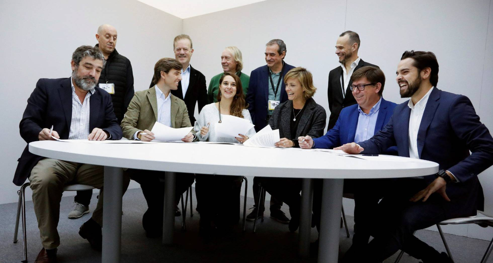

Sánchez, Casado, Rivera, Iglesias y Abascal se ven las caras por primera vez en el único debate electoral de la campaña
Era la última oportunidad para el desbloqueo. Y se perdió. El debate, según coinciden dirigentes de las formaciones centrales, no logró despejar la gran incógnita con la que se llega a la repetición electoral: ¿Servirá para algo esta vez? ¿Habrá un Gobierno estable? Todo quedó tan abierto como antes de llegar al cruce.